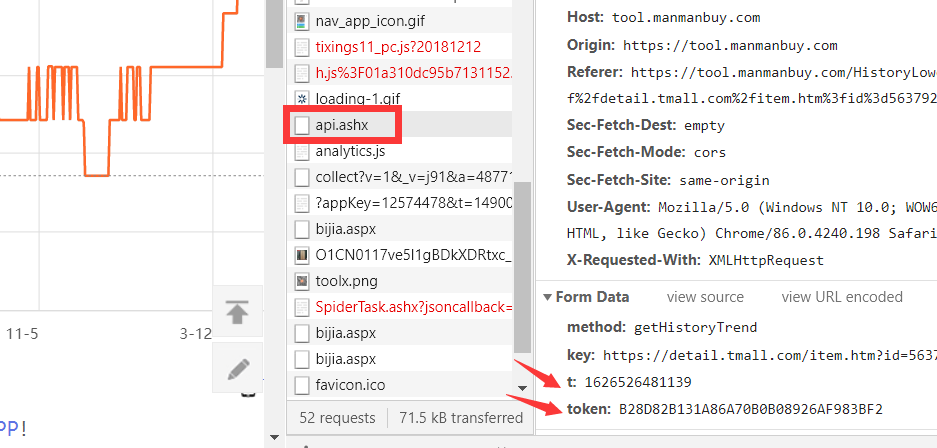
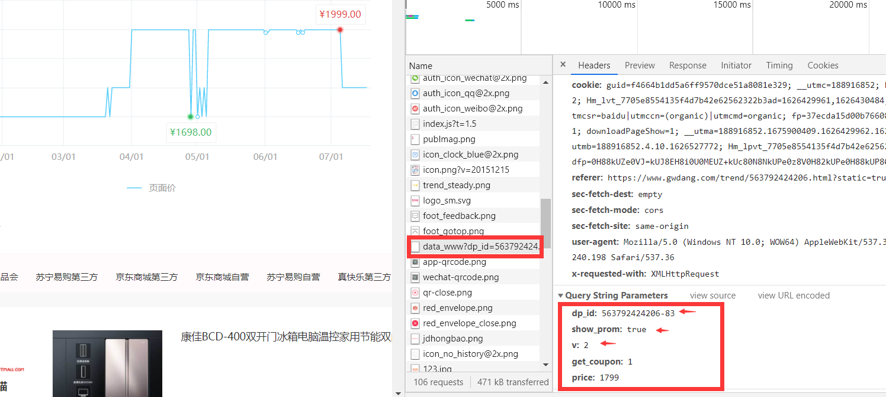

前言
其实问题最开始的目的就是找数据集。
需要：商品历史价格、商品描述、评分等级
从而计算商品的平均价格、优惠力度等实用信息
无奈的是很难找到这种拥有数据集的网站 [有也是广告和付费的]，因此转而寻找历史价格查询的网站，通过爬取这样的网站达到目的。
然而这种网站一般都只提供一个查询窗口，即：输入商品链接，返回历史价格
这样的流程，并不是理想的那种清单式数据可便于直接爬。
于是我考虑通过如下方案进行爬虫：
- 遍历淘宝页面清单，获取一定数量的商品链接
- 循环通过商品链接一个个得到不同商品的历史价格
解析
商品清单
通过【开发者工具】解析淘宝【搜索界面】的分页规则如下（以家电为例）：
1
2
3
4
| https://s.taobao.com/search?q=家电s=0
https://s.taobao.com/search?q=家电&s=44
https://s.taobao.com/search?q=家电&s=88
https://s.taobao.com/search?q=家电&s=132
|
可见，淘宝搜索返回界面中，传递的参数q为搜索词，并且以44个商品为一页。
注：京东商城的界面分页是ajax动态推送的，不便于爬虫，这也是最终选择淘宝来爬的原因之一，主要原因是我太菜了QAQ
事实上，淘宝页面也是由js动态显示的，因此F12出来的html文件与直接get返回的页面并不一致，解析发现，每一个商品的ID和名字可以用 正则表达式 选中，规则如下：
1
| reg = '"nid":"(\d{1,19})".*?,"title":"(.*?)"'
|
商品信息
商品信息的页面由其唯一的商品ID决定，规则如下：
1
| https://detail.tmall.com/item.htm?id={商品id}
|
与商品清单逻辑相同，想要获取评分星级，只能通过返回的text文本利用正则表达式选择。
其中，因为淘宝搜索界面返回的商品id有可能属于天猫也有可能属于淘宝，即是返回的页面规则也会大不相同。
对天猫解析得到如下选取方式：
1
2
|
ans = html.xpath('//span[@class="shopdsr-score-con"]/text()')
|
而淘宝相对复杂，需要对返回页面选取得到userid和shopid，然后再调用api得到商家信息。
1
2
3
4
5
6
|
reg = "id : '(\d{5,15})',[\s\S]*?id : '(\d{5,15})',"
url = "https://hdc1new.taobao.com/asyn.htm?userId={userid}&shopId={shopid}
reg = "<em>(\d\.\d)</em>"
|
注：上述方案并不全面，有些商品隶属于天猫/淘宝超市，所以返回界面又不再适用力QAQ，不知道该吐槽淘宝前端规则不统一臃肿又凌乱还是该吐槽我考虑事情不周到不全面QAQ
历史价格
网上有很多做这种价格分析的网站（多半是隶属于手机app）
比如：喵喵折、慢慢买还有我用到的 购物党
慢慢买
慢慢买的历史查价链接如下：慢慢买历史价格走势
它反而比起淘宝对爬虫有更加严格反爬机制，比如智能验证：
当然，这一机制可以通过 获取Cookie 的方式尽量在有限时间内规避
接下来的才是关键……
通过分析得知，慢慢买所返回的数据在网页上是数据可视化的折线图，估计是echarts框架，利用工作台解析得知，其内部数据在api.aspx中。

其中，POST的data请求参数中，key就是淘宝/京东商品的链接，t则是当前的时间戳^[1]^.
而慢慢买会对POST参数产生动态token一并提交，由此才能正确返回如下的json数据
1
2
3
4
5
6
7
8
9
10
11
12
13
14
15
16
17
18
19
20
21
22
23
24
25
26
27
28
| {
"msg":"",
"code":0,
"data":{
"haveTrend":1,
"changPriceRemark":"降幅10%",
"runtime":26,
"zouShi_test":2,
"changePriceCount":102,
"spbh":"10|563792424206",
"spUrl":"https://item.taobao.com/item.htm?id=563792424206",
"currentPrice":1799.00,
"spName":"康佳BCD-400双开门冰箱电脑温控家用节能大容量双门对开门电冰箱",
"lowerPrice":1493.0,
"bjid":34828482,
"zouShi":2,
"siteId":10,
"siteName":"天猫商城",
"datePrice":"
[1560700800000,1699.00,\"1699元包邮（立减200元，前100名赠100元猫超卡）\"],
[1560787200000,1699.00,\"\"],
[1560873600000,1699.00,\"\"],
[1560960000000,1699.00,\"\"],
[1561046400000,1699.00,\"\"],
[1561132800000,1699.00,\"\"],
[1626451200000,1799.00,\"\"],
省略……
}
|
显然，其中的datePrice就是我们需要的时间戳和价格。
然而，由于其结合当前时间戳与链接的TOKEN加密方式，以及针对智能验证状态的Authorization参数，这种情况只能反编译apk，获取authorization的计算规则。
我也想过或许可以利用Selenium爬虫的方法来获取数据，但是还是太过繁琐，并且需要占用浏览器资源，要知道我需要爬取的是48×10=480个家电的2021.7.17−2020.7.17=365天的价格，这样实在是不太好的处理方式。
上述难点无一不是短时间内难以攻克的。于是，我就只能放弃使用慢慢买作为主要爬取网站力。
购物党
在告别慢慢买之后，我找了许多其他的网站，有意思的是这些网站大多数甚至都是直接调用慢慢买的api，在我好奇的同时打开了慢慢买的官网才发现，原来他自己就提供了api的调用服务，不过是需要商业合作的，难怪会有如此的反爬虫机制。
但是，功夫不负有心人，还是被我找到了一个“简陋”的网站可以直接爬取数据，那就是购物党.

首先是只需GET请求，请求参数直接与商品ID挂钩，也就是说我甚至不许要用到淘宝天猫的前缀，此外也没有什么反扒机制，可以直接动手。
返回json数据如下：
1
2
| {"series":[{"max":199900,"max_stamp":1625414400,"min":159800,"min_stamp":1610380800,"original":199900,"current":179900,"data":[{"x":1594915200,"y":159800,"is_drawn":1},{"x":1595001600,"y":169800},{"x":1595520000,"y":169800},{"x":1595606400,"y":159800,"is_drawn":1},{"x":1595779200,"y":159800},{"x":1595865600,"y":169800},{"x":1595952000,"y":159800},{"x":1596211200,"y":159800},{"x":1596297600,"y":169800},{"x":1596384000,"y":159800,"is_drawn":1},{"x":1596470400,"y":159800},{"x":1596556800,"y":169800},{"x":1596643200,"y":159800},
省略
|
其中，x就是10位时间戳，y就是产品价格的10倍，仅此而已。
开爬
由于工程量比较小，也没有什么速度要求，因此我这次只考虑使用requests库来爬取，最后通过pandas保存为excel文件。
商品信息Ⅰ
1
2
3
4
5
6
7
8
9
10
11
12
13
14
15
16
17
18
19
20
21
22
23
24
25
26
27
28
29
30
31
32
33
| import requests
import re
import time
import pandas as pd
keyword = "家电"
key = ['冰箱','洗衣机','电视','扫地机器人','微波炉','电水壶','破壁机','电饭煲','电热水器','空调']
headers = {
'User-Agent':'Mozilla/5.0',
'Cookie': '已失效，此处不提供',
}
name = []
link_id = []
frm = []
for i in key:
url = 'https://s.taobao.com/search?q='+i
res = requests.get(url = url,headers = headers)
reg = '"nid":"(\d{1,19})".*?,"title":"(.*?)"'
ans = re.findall(reg,res.content.decode('utf-8'))
for j in ans:
name.append(j[1])
link_id.append(j[0])
frm.append(i)
time.sleep(3)
gd_detail = {"商品属性":frm,"商品名称":name,"商品id":link_id}
result = pd.DataFrame(gd_detail)
result.to_excel('GoodsInf.xlsx')
|
历史数据
1
2
3
4
5
6
7
8
9
10
11
12
13
14
15
16
17
18
19
20
21
22
23
24
25
26
27
28
29
30
31
32
33
34
35
36
37
38
39
40
| import requests
import re
import time
import pandas as pd
headers = {
'User-Agent':'Mozilla/5.0',
}
df = pd.read_excel('GoodsInf.xlsx',engine='openpyxl')
ndf = []
for j in range(0,len(df)):
api = f"https://www.gwdang.com/trend/data_www?&dp_id={str(df['商品id'][j])}-83&show_prom=true&v=2"
Date = []
Price = []
res = requests.get(url=api,headers=headers)
if res.status_code == 200 :
print('第'+str(j)+'件商品 历史价格爬取中……')
datePrice = res.json()['series'][0]['data']
for i in range(0,len(datePrice)):
Date.append(time.strftime("%Y-%m-%d", time.localtime(datePrice[i]['x'])))
Price.append(0.01*datePrice[i]['y'])
totall = {f"{j}-时间":Date,f"{j}-商品价格":Price}
totall = pd.DataFrame(totall)
ndf.append(totall)
else:
print('错误：',res.status_code)
time.sleep(1)
result = pd.concat(ndf,axis=1)
result.to_excel('DatePrice.xlsx')
|
商品信息Ⅱ
1
2
3
4
5
6
7
8
9
10
11
12
13
14
15
16
17
18
19
20
21
22
23
24
25
26
27
28
29
30
31
32
33
34
35
36
37
38
39
40
41
42
43
44
45
46
47
48
49
50
51
52
53
54
55
56
57
58
59
60
61
62
63
64
| import requests
from lxml import etree
import time
import re
import pandas as pd
df = pd.read_excel('GoodsInf.xlsx',engine='openpyxl')
disc = []
ser = []
liu = []
for j in range(0,len(df)):
url = f"https://detail.tmall.com/item.htm?id={str(df['商品id'][j])}"
try:
res = requests.get(url=url,headers=headers)
except:
disc.append(0)
ser.append(0)
liu.append(0)
continue
else:
if res.status_code == 200 :
print('第'+str(j)+'件商品 商店评分爬取中……')
html = etree.HTML(res.text)
ans = html.xpath('//span[@class="shopdsr-score-con"]/text()')
if not ans:
shopid = re.findall("id : '(\d{5,15})',[\s\S]*?id : '(\d{5,15})',",res.text)
if not shopid:
disc.append(0)
ser.append(0)
liu.append(0)
continue
tmp = requests.get(url=f"https://hdc1new.taobao.com/asyn.htm?userId={shopid[0][0]}&shopId={shopid[0][1]}",headers=headers)
ans = re.findall("<em>(\d\.\d)</em>",tmp.text)
if not ans:
disc.append(0)
ser.append(0)
liu.append(0)
continue
disc.append(ans[0])
ser.append(ans[1])
liu.append(ans[2])
else:
print('错误：',res.status_code)
time.sleep(0.2)
ndf = {}
ndf['商店描述'] = disc
ndf['商店服务'] = ser
ndf['商店物流'] = liu
df = pd.concat([df,pd.DataFrame(ndf)],axis=1)
df.to_excel('GoodsInf.xlsx')
|
结语
后续还有对数据表格的美观化处理，以及一些统计上的计算，此处不再给出。可以在我的Github仓库中查看详细。
总的来说，这次数学建模的集训模型3我并没有像模型2那种运筹优化问题那样投入，而只是专注于程序部分。准确来说，其实这才是应该我做的部分，但是我实在太过热爱运筹学了（不是）
此文章仅作记录，记录我不完美的编程之旅……